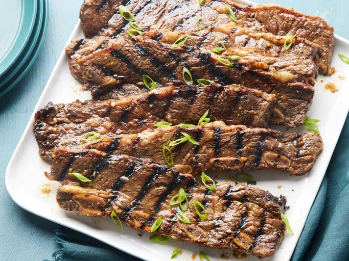

Home
Korean BBQ Short Ribs

Description
Korean BBQ Short Ribs, also known as "Galbi" or "Kalbi," are a popular Korean dish made from beef short ribs
that are marinated in a flavorful mixture of soy sauce, garlic, sugar, sesame oil, and other seasonings. The
marinade infuses the meat with a sweet and savory flavor, making it tender and delicious when grilled or
broiled. Korean BBQ Short Ribs are often served with rice and various side dishes, making them a beloved
choice for gatherings and special occasions.
Ingredients
- ¾ cup soy sauce
- ¾ cup water
- 3 tablespoons white vinegar
- 2 tablespoons sesame oil
- ½ large onion, minced
- ¼ cup minced garlic
- ¼ cup dark brown sugar
- 2 tablespoons white sugar
- 1 tablespoon black pepper
Steps
- Gather all ingredients.
- Pour soy sauce, water, vinegar, and sesame oil into a large, non-metallic bowl. Whisk in onion, garlic, brown sugar, white sugar, and pepper until sugars dissolve.
- Submerge ribs in marinade; cover the bowl and refrigerate 7 to 12 hours -the longer, the better.
- Preheat an outdoor grill for medium-high heat. Remove ribs from marinade and shake off excess; discard marinade.
- Cook on the preheated grill until the meat is no longer pink, 5 to 7 minutes per side.
- Serve and enjoy!